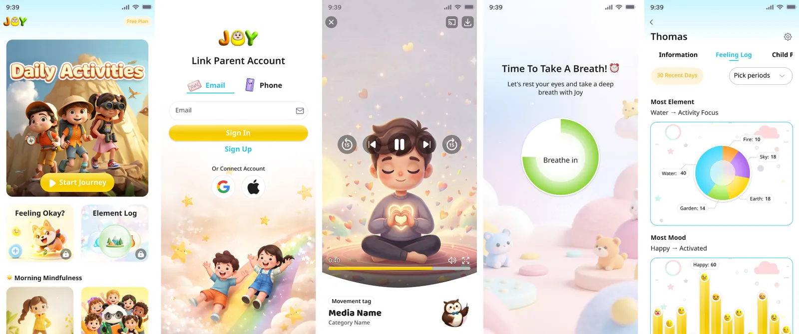
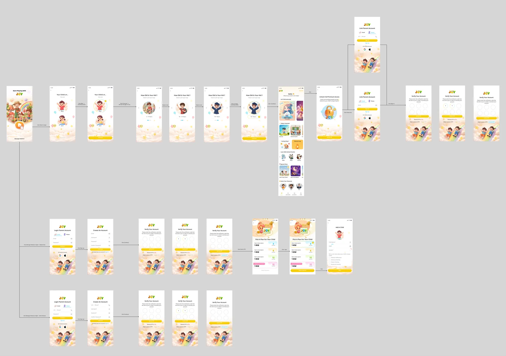

More work
JOY: a wellness and learning app for children
An interactive wellness and learning app that combines playful storytelling, emotional development, mindfulness activities and gamified experiences.

At a glance
Problem
Make wellness and learning activities engaging, approachable and easy to understand for children.
My role
I designed the logo and identity, the app flows and a child-friendly UI system, and created characters with AI-assisted 3D workflows.
Delivered
The JOY logo, mobile app UI/UX, interactive prototypes, 3D visual assets, illustrations and motion-oriented elements.
What I did
- Designed the JOY logo and visual identity.
- Designed the mobile app: information architecture, navigation, user flows and key interaction patterns.
- Developed a child-friendly UI/UX system with a playful visual language and intuitive interactions.
- Created custom 3D characters, environments, illustrations and visual assets using AI-assisted workflows.
- Designed interactive experiences for wellness, mindfulness and gamified learning.
- Created wireframes and interactive prototypes to explore flows and validate the experience.
- Focused on simplicity, accessibility, emotional design and age-appropriate interactions.
Logo
Screens

Onboarding and sign-in flow
